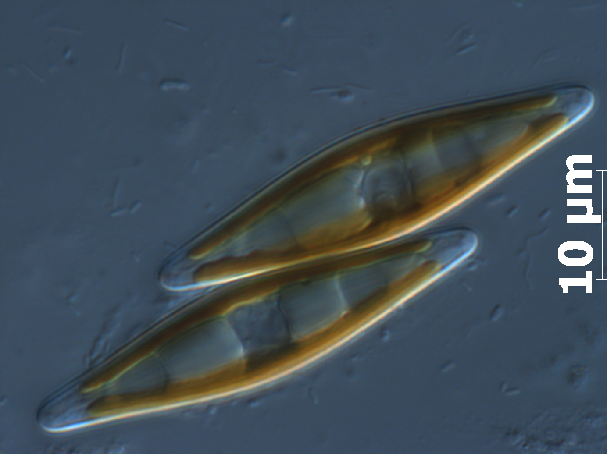
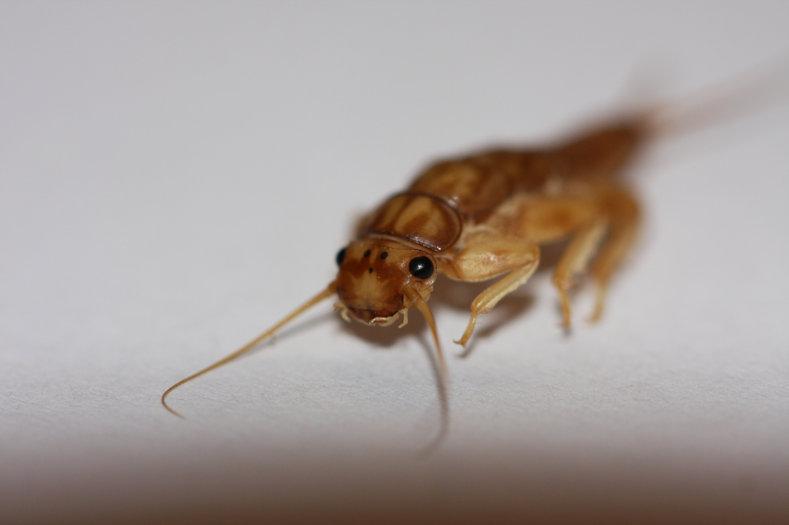

Les diatomées

Les diatomées sont des microorganismes photosynthétiques. La taille de ces algues unicellulaires varie de quelques μm à plus de 500 μm. La caractéristique principale des diatomées réside dans la présence autour du contenu cellulaire, d’une enveloppe de nature siliceuse dénommée frustule. Le détail de ce frustule est propre à chaque espèce.
Les diatomées colonisent tous les milieux aquatiques à l’exception des eaux les plus chaudes et les plus hypersalines. Mais leur faible besoin en lumière et en humidité peut leur permettre de coloniser d’autres milieux tels que l'air et le sol. Leurs cycles de vie très court en font de très bons indicateurs des variations physico-chimiques de leur environnement.
Les préférences écologiques des espèces présentes dans un échantillon permettent d’appréhender la qualité du milieu.
Dans les cours d’eau, le dénombrement des espèces identifiées permet de calculer différents indices de la qualité de l’eau : l’Indice Biologique Diatomées (IBD) et l’Indice de Polluo-sensibilité Spécifique (IPS).
Les macro-invertébrés

Les macro-invertébrés aquatiques regroupent les insectes (adultes et larves), les crustacés, les mollusques et les vers qui vivent en zone benthique des rivières et plans d’eau.
Leurs différences de polluo-sensibilité permettent d’évaluer la qualité biologique d’un cours d’eau en se basant sur la composition et la diversité des populations. La dégradation des conditions de référence rend compte des perturbations d’origine naturelle ou anthropique.
Plusieurs indices basés sur les macro-invertébrés peuvent être mis en œuvre dans le cadre de l’expertise d’Ecoma :
- IBGN (Indice Biologique Global Normalisé) ― norme AFNOR NF T90-350.
- IBG-DCE (Indice Biologique Global DCE) ― norme AFNOR NF T90-333 (prélèvements) et norme expérimentale XP T90-388 (analyse en laboratoire). Actuellement utilisé en routine sur l’ensemble des réseaux de surveillance Français.
- IBGA (Indice Biologique Global Adapté aux grands cours d’eaux) ― protocole expérimental d'échantillonnage des macro-invertébrés en cours d'eau profonds, Cemagref 2009).
La récolte des macro-invertébrés sur la station étudiée se fait en période d’étiage avec des filets de type surber ou haveneau (filet de maille 1/20ème de m²). L’extraction et l’identification des macro-invertébrés sont réalisées en laboratoire à l’aide de loupes binoculaires. L’exploitation de la liste faunistique permet ensuite le calcul de notes de qualité (IBGN, IBG MPCE, IBG MGCE, I2M2). L’étude de la composition du peuplement permet de mettre en valeur les traits écologiques du peuplement.
